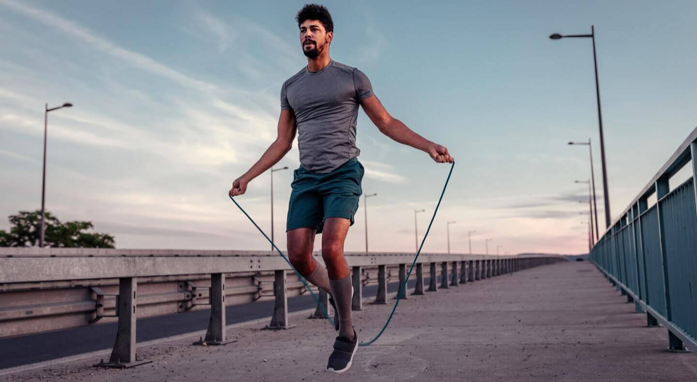

Dicas de exercícios para a quarentena
Nós da equipe Cultura Brasil sabemos que a maioria das atividades que realizavamos antes da pandemia não tem sido iguais agora, entre elas podemos citar a academia, já que o contato com os equipamentos e até com outras pessoas dentro do ambiente pode trazer um risco à sua saúde, portanto, criamos um conteúdo a partir de pesquisas listando os melhores e mais fáceis exercícios para se fazer em casa.
Subir e descer escadas
O movimento de subir e descer escadas é um exercício aeróbico que pode nos trazer diversos benefícios para a saúde, ele pode ajudar o coração, fortalecer as partes inferiores do corpo, como perna, glúteos, toda a musculatura pélvica e ainda treinamos o equilíbrio.
Pular Corda
A atividade de pular corda é uma atividade cardiovascular bem popular até, além de divertida ela exige um grande preparo, é fácil de se praticar, ou seja, praticável em quase qualquer lugar, casas, apartamentos pequenos, com ela você pode queimar calorias efortalecer as pernas e articulações.
-
Agachamentos
Talvez os agachamentos são os mais fáceis dessa lista, eles não precisam nem mesmo de cordas, são muito diversos e adaptáveis, podendo ser feitos com ou sem uso de pesos por exemplo. Eles fortalecem toda a região dos abdomens para baixo, musculatura da perna e além disso podem te deixar mais ativo e menos cansado.
-
Alongamentos
Os alongamentos são, assim como os agachamentos, bem versáteis, podem ser feitos com e sem o uso de equipamentos como bolas, podem também ser bem variados, fortalecendo coluna/postura, abdomens e várias outras partes do corpo. Muito recomendado para pessoas que tem alguma limitação ou que estão em idade avançada.
-
Dança
A dança além de uma atividade muito popular é também muito divertida e contagiante! Você pode dançar escutando a sua música preferida, ou até mesmo usando um ritmo específico que te estimule a dançar. Ela fortalece completamente a musculatura do corpo e pode ser o primeiro passo para o mundo de saída do sedentarismo.
-
Yoga
Muito confundido com os alongamentos o yoga pode trazer diversos benefícios para a saúde, além de nos deixar mais calmos ele também alonga o corpo, sendo bom para postura e por ser uma atividade leve pode servir como primeiro passo para uma jornada de atividades físicas.
-
Circuitos
Os circuitos não são atividades determinadas, sendo possivelmente a mais diversificada e variável da lista até agora, eles podem ser feitos de forma simples em casa, mesmo em espaços pequenos e são muito recomendados para crianças. Eles podem fortalecer todo o corpo, queimar calorias e ajudar a gastar a energia acumulada.
-
Boliche reciclado
Gosta de boliche? Ótima notícia, o boliche usando materiais recicláveis é uma atividade que pode ser feita em casa e pode também ser muito atrativa e divertida, podemos pegar qualquer bola que temos em casa, de preferência alguma mais pesada, para simular o peso da bola de boliche, e usar garrafas para reproduzir os pinos, para fazer a pista basta escolher algum corredor da sua casa e pronto, só se divertir.
-
Meditação
Nesse momento complicado que passamos de isolamento a meditação pode trazer diversos benefícios psicológicos e mentais, serve como uma atividade muito boa para a prevenção contra a ansiedade e preocupações que todos estamos experienciando.
-
Acampamento em casa
e você tem um grande quintal em casa essa é pra você, você ou sua família gostam de acampamentos? Então por que não acampar em casa, essa atividade é muito recomendada para estimular crianças, ou até mesmo dar uma relaxada na família, ficando ao ar livre, para fazer a tenda basta pendurar alguns lençóis, usar algumas almofadas e enfeitar do jeito que preferir, com luzes ou de outra maneira, faça um ambiente que seja atrativo, confortável e principalmente aconchegante, cria uma boa experiência ao ar livre para a sua família.